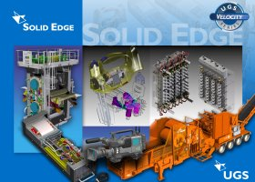

|
Solid
Edge UGS Velocity Series'in Merkezinde:
Solid
Edge, 18. sürümüyle beraber artýk entegre tasarým-veri yönetim
çözümleri ailesi UGS Velocity Series'in çekirdek üyesi. UGS
Velocity Series, veri yönetimi için Teamcenter Express, analiz
için Femap uygulamalarýndan oluþan komple bir çözüm paketi.
Kendi alanlarýnda öncü olan bu üç güçlü UGS PLM çözümünü biraraya
getiren UGS Velocity Series, üreticilerin tüm mühendislik
ihtiyaçlarýna cevap vermeyi hedefliyor. Solid Edge'i tercih
eden firmalar diðer UGS Velocity Series ürünleriyle ilave
ihtiyaçlarýna çözüm bulabiliyorlar.
Veri
Yönetimi
Yeni
Solid Edge Embedded Client (entegre istemci) özelliði Solid
Edge ve Teamcenter arasýnda kesintisiz ve þeffaf bir baðlantý
gerçekleþtiriyor. Bu entegrasyon Solid Edge'e iliþkin verilerin
saklanýp gelecek projelerde yeniden kullanýmýný kolaylaþtýrýyor.
CAD-PDM entegrasyonlarýndaki geleneksel yaklaþýmlara kýyasla
Solid Edge-Teamcenter entegrasyonu sofistike veri yönetim
fonksiyonlarýný Solid edge kullanýcýlarýna tümüyle þeffaf
hale getiriyor. Böylelikle kullanýcýlar farklý bir ortama
ayrý bir giriþ yapmaksýzýn ve uðraþtýklarý iþi bölmeksizin
tanýdýklarý bir arabirim ile çalýþabiliyorlar.
Analiz
Tasarým
zamanlarýnýn azaltýlmasý, pazara sunuþun hýzlandýrýlmasý ve
kalitenin artmasý adýna pazarda hissedilen baskýlar dijital
simülasyon kullanýmýnýn çoðalmasýna sebebiyet vermiþtir. Femap
Express bu amaçlara yönelik olarak tasarýmcýlarýn hýzlý ve
doðru analizler yapmasýný ve parçalarýn amaca uygunluðunu
test edebilmelerini saðlýyor. Bu tarz analizleri tasarým sürecinin
daha erken safhalarýna çekmek Solid Edge kullanýcýlarýnýn
tasarýmlarýnýn yeterince güçlü olmasýný ve istenildiði gibi
çalýþmasýný garantiliyor. Bu sayede maliyetli ilave iþlerden
de kaçýnýlmýþ oluyor.
Kablolama
Solid
Edge 18. sürümde mevcut kablolama özelliklerini geliþtirerek
çok daha kullanýþlý Wire Harness Design modülünü sunuyor.
Bu yeni modül ile tel, kablo ve kablo gruplarýnýn Solid Edge
montaj ortamýnda hýzlý ve verimli bir þekilde modellenip organize
edilmesini saðlanýyor.
Elektrik
mühendisleri kendi tasarýmlarýný geliþtirip tamamladýklarýnda
artýk mekanik tasarýmcýlar Solid Edge Harness Wizard (kablolama
sihirbazý) yardýmýyla tel ve kablolarýn geçecekleri yerleri
otomatik olarak oluþturabiliyorlar. Çünkü kablolama sihirbazý,
Mentor Graphics, Cimteam, Vesys, LTX, Promis-e gibi bir çok
elektriksel þema uygulamasýndan komponent ve baðlantý listelerinin
(net-list) verilerini Solid Edge'e otomatik olarak aktarabiliyor.
Þema
ve Diyagramlar
Artýk
bir çok firma maliyetlerini düþürmek, kaliteyi arttýrmak ve
rekabet edebilmek amaçlarýyla 3 boyutlu tasarým sistemlerini
tercih ediyor. 2 boyutlu sistemlerden 3 boyutlu tasarýma geçiþte
UGS kolay adýmlar içeren bir metod kullanýyor. Bazý tasarým
problemlerinin en iyi þekilde sadece iki boyutlu basit geometriler
ile çözümlendiði gerçeðini gören UGS, Solid Edge'in 18. sürümünde
makina taslaklarý, þematik diyagramlar üzerine yenilikler
de katan Solid Edge Diagramming çözümünü önceki kolaylýklarýna
ekliyor. Mevcut AutoCAD bloklarýnýn dahi ek düzenlemeye gerek
olmaksýzýn DWG dosyasýndan direk kullanýmý gibi yenilikçi
2 boyut kabiliyetleriyle firmalarýn 2 ve 3 boyut ihtiyaçlarý
için ayrý ayrý CAD sistemleri bulundurma gereksinimi de ortadan
kalkmýþ oluyor.
Elektrod Tasarýmý
Solid
Edge Mold Tooling kalýp tasarým modülü plastik enjeksiyon
kalýplarýnýn tasarýmýnda bazý aþamalarýn yinelenmesine engel
olacak þekilde tasarýmý adýmlara bölerek hýzlandýran güçlü
bir çözümdür. 18.sürüm, elde edilen bu zaman tasarrufunu yeni
elektod tasarýmý uygulamasýyla imalat aþamasýna kadar taþýyor.
Yeni modül, ödül kazanmýþ Solid Edge arayüzü içinde adým-adým
yaklaþým ile tek ve bileþik elektrodlarýn geliþtirilmesi iþlemlerini
kolaylaþtýrýyor. Solid Edge, kullanýcýlarýn kalýp üzerinde
basitçe belirlediði bölge için elektrodun katý modelini önceden
belirlenen parametreler ile meydana getiriyor. Elektrodlar,
imalatýn kaba, yarý hassas ve hassas aþamalarý için oluþturuluyor
ve orijinal kalýp tasarýmýna iliþkisel baðlý oluyor. Kalýpta
sonradan yapýlan deðiþiklikler elektrodlarda uygun þekilde
otomatik güncelleniyor.
CAM
Tek
bir tuþ týklamasýyla Solid Edge içinde yer alan parça, sac
parça ya da montaj modeli NX Machining içerisinde iþlenmeye
hazýr hale geliyor. Bu aþamada NX, Solid Edge içinde gerçekleþtirilen
her türlü tasarým deðiþikliðinin farkýnda. Geometrideki her
hangi bir deðiþiklik NX içindeki iliþkin geometrilerin güncellenmesini
ve takým yollarýnýn yeniden oluþturulmasýný saðlýyor. Harcanacak
ekstra zaman ve çabanýn tasarruf edilmesi mümkün oluyor.
Hesaplamalý
Parametrik Makina Parçalarý, Mühendislik Referanslar
Solid
Edge 18. sürüm içinde ilave ücret gerektirmeyen yeni bir mühendislik
çözümü de sunuyor. Engineering Reference adýný verdiði bu
çözüm içinde belli baþlý makina parçalarýnýn oluþturulma öncesinde
istenilen kriterlerle hesaplamalarýný yapmak mümkün kýlýnýyor.
Kriterleri karþýladýðý hesap edilen parçanýn tek tuþ ile otomatik
olarak parametrik Solid Edge modeli oluþturuluyor. Mil, kam,
diþli, konik diþli, yay gibi parçalarý içeren bu uygulamanýn
gelecek sürümlerde geniþlemesi ve zenginleþmesi bekleniyor.
Daha fazla bilgi için: www.solid-edge.com
 Ýrtibat: Ýrtibat:
Destek yazýlým Ltd. Þti.
Tel: (216) 651 98 01
www.destek-yazilim.com
|